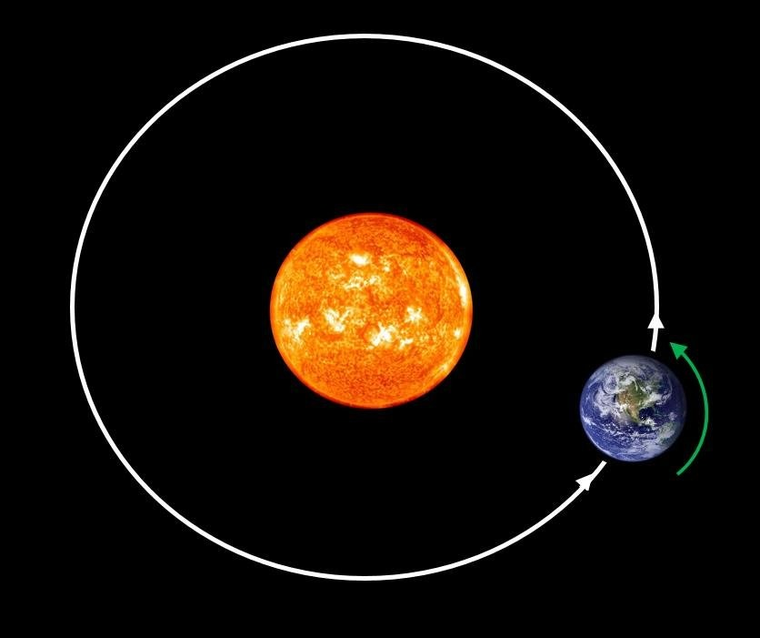
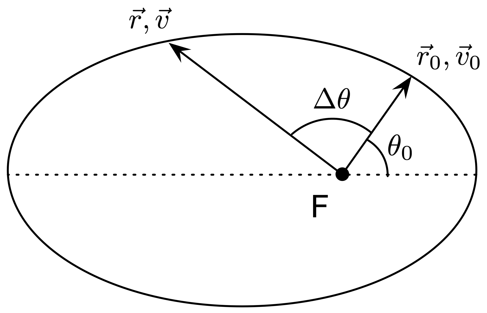

The Two Body Problem
The Two-Body Problem
The two body problem is an infamous problem in classical mechanics first solved by Sir Isaac Newton dealing with the future trajectories of two massive bodies with known velocities and masses exerting gravity on eachother. It is a solved problem, involving differential calculus and linear algebra. What this essentially means is that whenever we have two bodies, whether they be planets, moons, stars or anything else with a non-negligable mass, we are able to predict where they will end up using mathematics.
Initial Assumptions
Physics, fundamentally, isn't about mystically learning all the secrets of the universe from a fortune-teller, but rather creating models that accurately predict (to a useful enough extent) the empirical reality that we observe. What makes a model better than another is its ability to accurately describe reality, and nothing else. These models do not envision reality exactly (atleast where science is today) but work for our needs well enough. And so in order to solve the Two Body Problem we need to make some initial assumptions, in essence constructing a model of the problem.
We abstract the planetary bodies as point particles, with vectors representing their velocities. We also keep in consideration the masses of the bodies. It is at this point when it becomes purely a mathematical task.
Solution
Using the aforementioned differential calculus and linear alebra, as well as working with polar coordinates, a general solution does exist. It is done my decomposing the problem down into two simpler one body problems. The center of mass of both bodies is also established into the problem, and we call this the barycenter. And thus by utlizing mathematics, an exact solution can be found, negating the need for an approximation.
Research links
- Project URL www.example.com
- Project URL www.example.com
- Project URL www.example.com
- Project URL www.example.com